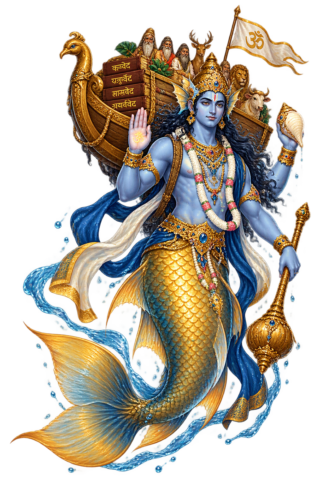

The Living Myth
Fish Avatar of Vishnu · The Fish, First Avatāra of Viṣṇu · 'The Fish' — the first avatāra of Viṣṇu, who saved Manu and the Vedas from the great deluge
Stories of Matsya
The Matsya myth is India’s flood-saga: the warning, the ark, the world’s drowning, and the mooring at the one remaining peak — with the added theology of the avatāra, Vishnu descending to preserve both species and scripture. The telling grows from a brief Vedic episode to one of the Purāṇas’ most beloved complete narratives.
The oldest telling is dry and swift: Manu finds a tiny fish, rears it through successively larger vessels until only the sea will hold it; it warns him of the coming flood and returns as a horned leviathan to tow his ship by a cable. At the flood’s peak they moor on the one un-submerged tree — the nyagrodha — and the fish reveals itself as ‘the lord of creatures’.
The eponymous Purāṇa expands everything: the demon Hayagrīva steals the four Vedas as Brahmā sleeps; Vishnu wakes as a fish, kills Hayagrīva in the world-river’s depths, and returns the scriptures; then the flood proper — the ark, the sages, the seeds, and the long tow to the Himalayan peak where the new world begins.
In the daśāvatāra sequence, Matsya is the first: preservation precedes power. The theology reads each avatāra as the god’s answer to a cosmic emergency — here, the emergency is knowledge itself, the Vedas drowned or stolen. The fish saves the texts before it saves the species.
The flood-list is the world’s most widespread myth-complex: Utnapishtim in the Gilgamesh epic, Noah in Genesis, Deucalion in Greece, and Manu in the Purāṇas. The Indian telling’s distinctive signature is the warning fish — the saviour who speaks, and the god who tows.
The Flood-Saviour of Manu
Matsya is Vishnu’s first descent: the great fish that warned Manu of the coming flood, bade him build a ship, and bore it — and with it the seven sages, the seeds of every species, and the Vedas themselves — through the drowning of the world to the one un-submerged peak. The Purāṇic telling makes him the keeper of the scriptures as well as the race.
A tiny fish that outgrew every vessel, until only the ocean could hold it — Vishnu himself.
The pralaya, the world’s dissolution by water — the flood that ends each cycle of creation.
The ark of Hindu myth: the seven sages and the seeds of all life aboard, tied to the fish’s horn.
The demon Hayagrīva stole the scriptures; the fish slew him and returned the Vedas to the world.
From the original script to the living URL
मत्स्य
The name in its original Sanskrit form. Matsya (मत्स्य) is attested in the source tradition — “'The Fish' — the first avatāra of Viṣṇu, who saved Manu and the Vedas from the great deluge”. Its original diacritics and script distinctions carry the full phonetic and orthographic weight of the source tradition.
matsya
The plain matsya form is identical to the Unicode restoration. Because this name is already written in Latin letters, no diacritics, stress, or script information were lost — only capitalization differs.
Matsya
The Unicode restoration does not need to recover lost marks for Matsya. Its value is canonical spelling and consistent cataloguing, not the reconstruction of erased orthography. The domain is readable as-is to both DNS and humanity.
Matsya.com
This restoration is written entirely in ASCII letters — no Punycode encoding stands between Matsya and the DNS. The domain reads identically to machines and to human eyes.
The attested spelling family of Matsya
Matsya
Restores मत्स्य. The full Unicode restoration. matsya.com is not in the PuniCodex collection — it is watched for release; if it drops, this temple upgrades to an owned flagship. Attested by MW, Bhagavata.
How Matsya was spoken
How Matsya travels from ancient script to the modern URL
The lore you have read is the living myth. Extended Lore opens the scholarly vault beneath it: the cult and its material remains, a history of the image, the name after antiquity, a meditation on what the name still means, and the full scholarly apparatus — etymology, orthography, sources.
Enter Extended Lore